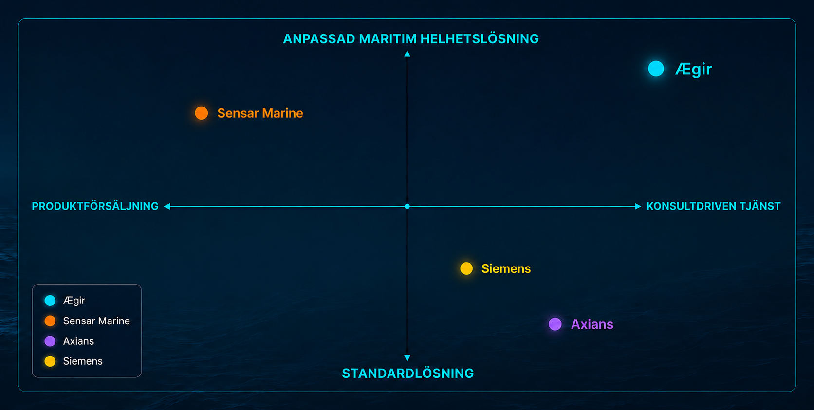
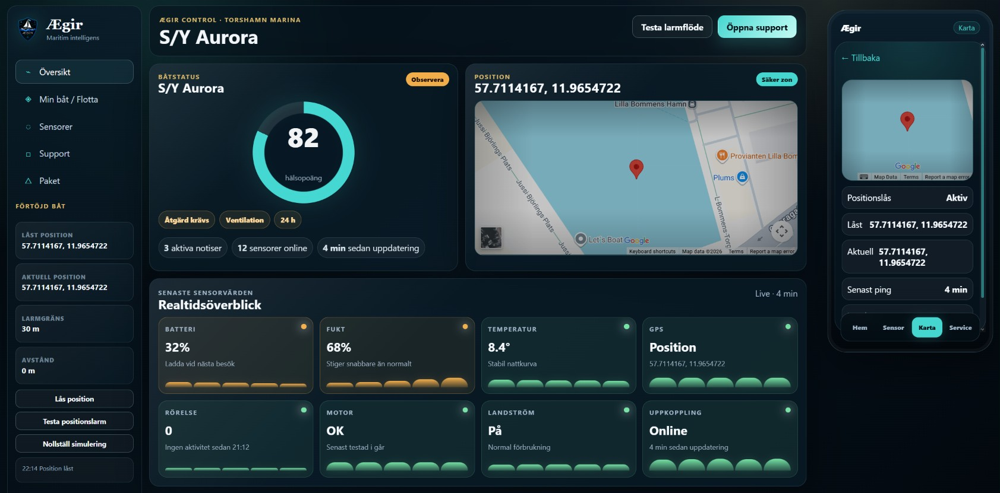
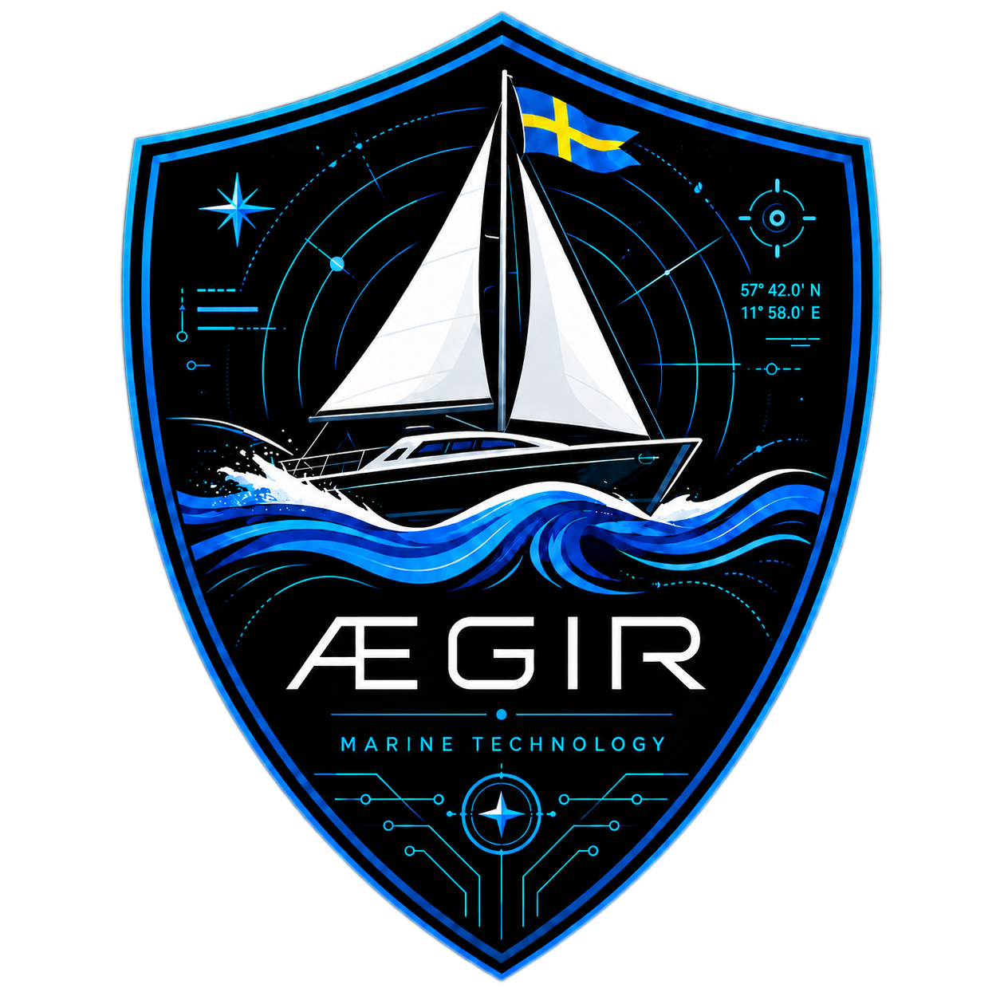

Telltale Kompakt
Mindre segelbåtar, 26-36 fot
699 kr/mån
Vad ingår?
- ✓Central gateway
- ✓Batterivakt
- ✓Larm
- ✓Fukt-/temperatursensor
- ✓Geofence/GPS
- ✓App
- ✓Historik
- ✓Analyser
- ✓Support
- ✓Landströmsvakt
För seglare som vill känna lugn - även från land.
För seglare, av seglare
Vi bygger lösningen utifrån verkliga seglarbehov.
Fem grundare med tydliga ansvarsområden.
Varför just segelbåtar?
Världsledande hårdvara i abonnemanget - utan hög starttröskel för kunden.
• 5-årigt ramavtal med Garmin
• Världsledande hårdvara med fulla garantier
• Garmin Technical-support
• Hårdvara ingår i abonnemanget
• Låg starttröskel för kunden
• Återanvändbar utrustning vid avslutat abonnemang
Fast månadsavgift, inkluderad hårdvara och återkommande intäkter.
Mindre segelbåtar, 26-36 fot
Större segelbåtar, 36 fot+

| År 1 (25 kunder) | År 2 (200 kunder) | |
|---|---|---|
| Kunder | 25 | 200 |
| Intäkter | 269 700 kr | 2 157 600 kr |
| Utgifter | 147 000 kr | 1 983 780 kr |
| Resultat (EBIT) | +122 700 kr | +173 820 kr |
Lokal start, låga fasta kostnader och liten marknadsandel krävs för tidig lönsamhet.
Abonnemang, standardiserad installation och återanvändbar hårdvara ger skalbarhet.
Efter Göteborg kan modellen skalas till Västkusten, Sverige och Norden.
Tidigt ägarskap innan modellen bevisas och bolagets värdering kan öka.
Vi söker inte kapital för att överleva - vi söker kapital för att accelerera.
Status, varningar och historik.
Snabb överblick från land.
Rätt signal vid rätt tid.

Vi hjälper segelbåtsägare att upptäcka risker tidigt, förebygga skador och känna större trygghet genom smart och lättillgänglig övervakning av båten.

Att skapa ett tryggare och mer intelligent båtliv genom teknik som gör det enklare att förstå, förebygga och agera.